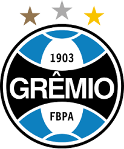

Nascido em São José-SC, tenho 25 anos e estou cursando o curso de ADS no IFSC
Meu amor pelo Grêmio vem desde os 12 anos de idade muito influenciado pelo meu tio

Gosto muito de animes e mangás, meus animes favoritos são Bleach e Hunter x Hunter, ja meus mangás favoritos são Berserk, CDZ e Hunter x Hunter
Gosto muito da minha familia, atualmente sendo composta pela minha mãe e irmão, e o namorado dela